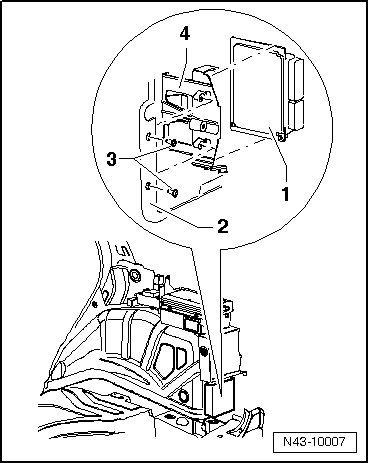

Level Control System Control Module
Level Control System Control Module
Special tools, testers and auxiliary items required
• Vehicle diagnostic, test and information system (VAS 5051)
• Torque wrench (VAG 1331)
Component location:
Level control system control module (J197) is installed in luggage compartment behind flap of right side wall trim.
During Model Year (MY) 2004, the level control system control module (7L6 907 553 A /B) (200 Hz) was replaced by the level control system control module (7L0 907 553 F/*) (800 Hz). As of the implementation of new control modules, the wheel speed sensors are no longer installed, and the vehicle level sensors were adapted.
If a 800 Hz control module instead of 200 Hz control module is installed, the vehicle level sensors must also be replaced. The wheel speed sensors remain in the vehicle for the purpose of sealing the line.
- Open the flap in the side wall trim and disconnect the electrical connector between the body and control module.
For the sake of illustration, component location is shown with side wall trim removed.

1. Level control system control module (J197)
2. Wheel housing
3. Bolt, 2 Nm
4. Bracket
Installation is performed in the reverse order of removal.
After installation, coding of level control system control module (J197) must be checked using the vehicle diagnosis, testing and information system (VAS 5051).